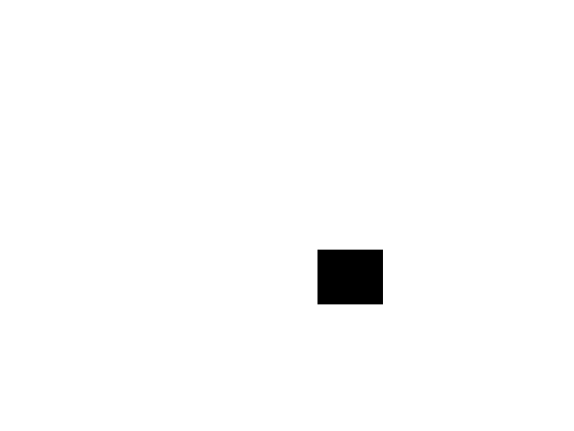
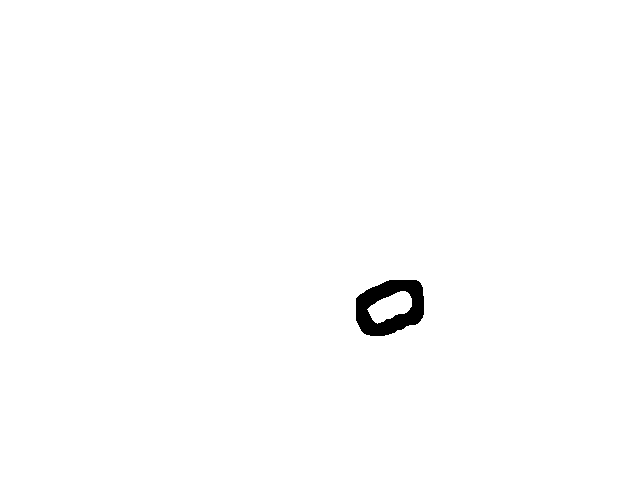
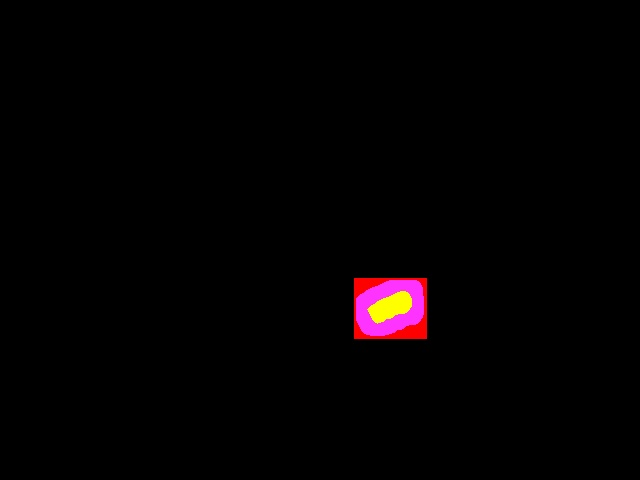

Reference Mask
System Output Mask
No-Score Zone
Mask Scoring Example
False Positives (FP): 0.0
False Negatives (FN): 0.0
True Positives (TP): 879.0
No Score Zone (NS): 2234


Reference Mask |
 System Output Mask |
|  No-Score Zone |
 Mask Scoring Example |
| NIMBLE Mask Metric (NMM): 1.0 | Total Pixels: 307200 False Positives (FP): 0.0 False Negatives (FN): 0.0 True Positives (TP): 879.0 No Score Zone (NS): 2234 |